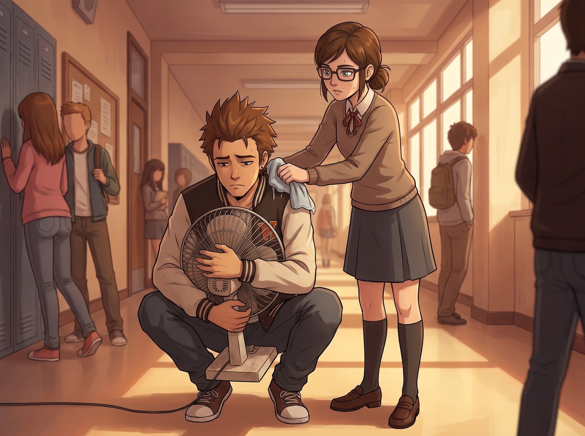

蒸籠學院

一、被動桑拿
那年夏天,一場罕見的熱浪席捲了整個太平洋西北地區。俄勒岡沿海常年陰涼多雨的氣候,讓包括布萊克威爾在內的絕大多數老牌建築,壓根沒安裝過中央空調系統——厚重的石牆和潮濕的海風,向來是這裡唯一的天然降溫方式。
可惜這次,連海風都熱得像從烤箱裡吹出來的。
教學樓瞬間變成一座座巨型吸熱保溫箱。教室裡,只有幾台老舊的吊扇有氣無力地轉動,學生們一個個熱得眼神呆滯,筆記本被手汗浸得起皺,連翻頁的力氣都快沒有。
「唯二」還算涼爽的地方,是圖書館的恆溫機房,和裝修豪華的校長辦公室——這種赤裸裸的階級落差,讓走廊上抱怨聲此起彼落。
二、走廊上的難民營
女生宿舍的慘狀,更是有過之而無不及。
Talia Hall 整棟樓的房間都沒有冷氣,窗戶只能推開一條窄縫,無濟於事。整層樓的女生早已放棄形象管理,穿著最清涼的睡衣,抱著冰袋,東倒西歪地癱在走廊地板上,活像一場大型難民營現場。
走廊公共冰箱裡,塞滿了各式冰鎮飲料和切好的西瓜,某天傍晚,甚至因為最後一格冷凍層的爭奪,爆發了一場劍拔弩張的小型衝突——兩個平時和氣的女生,為了誰先把自製冰棒放進去,吵得面紅耳赤,眼看就要升級成肢體衝突。
三、以德服人
「都別吵了。」
一個溫柔卻帶著不容置疑分量的聲音,忽然插了進來。
Kate 端著一個大保鮮盒,不知何時已經站在了走廊中央,盒子裡整整齊齊碼放著她親手做的自製冰棒——薄荷檸檬、蜂蜜柚子、還有幾支灑著洋甘菊碎瓣的花草冰棒,顏色清透,看起來就沁涼消暑。
「我做了不少,」她溫和地開口,把保鮮盒放到走廊中央的桌上,「夠大家一人分一支,不用搶了。」
原本劍拔弩張的兩人,對視一眼,都有點不好意思地移開視線,乖乖排起了隊。
要是換作以前 Victoria 統治整層樓的年代,遇上這種資源爭奪的場面,大概率是幾句尖酸刻薄的話,把弱勢的一方擠到牆角,誰更囂張誰就贏。可如今這層樓的風氣,早已悄悄變了樣——沒有人再靠威嚇搶佔便宜,取而代之的,是 Kate 這種不聲不響、卻總能讓人心甘情願排隊的溫柔感召力。
「還有,」Kate 又補充道,一邊給每個人分冰棒,一邊笑著說,「天台溫室那邊陰涼通風,誰要是熱得受不了,隨時可以上去待著,我留了幾把摺疊扇在那邊。」
走廊上原本焦躁的氣氛,漸漸被這份溫柔的秩序感撫平。女生們捧著清涼的冰棒,三三兩兩靠著牆坐下,聊起天來,竟也有種苦中作樂的鬆快。
四、電網再度告急
安撫了糖分和情緒問題,物理層面的酷暑依然無解。
大家紛紛插上自己私帶的小電風扇,老舊的宿舍電路,很快又發出不堪重負的悲鳴——跳閘的頻率呈指數級飆升,幾乎每隔半小時,就會傳來某個房間的驚呼和黑暗中的哀嚎。
Warren 抱著他那台老舊的落地扇,蹲在走廊上,一臉生無可戀地對著路過的 Brooke 抱怨:「這學校是不是巴不得我們集體中暑,順便還能省一筆冷氣電費?」
「省電費是真的,」Brooke 一邊用濕毛巾敷著脖子,一邊面無表情地接話,「至於中暑,大概只是意外收穫。」
兩人有氣無力地對視一眼,誰都沒力氣再多吐槽一句,只能繼續在悶熱的走廊裡,苦苦支撐這場漫長的酷暑攻防戰。